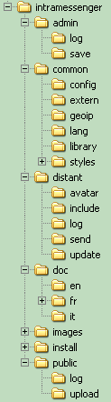

Come installare IntraMessenger (server)
Aggiornare la versione precedente del server IntraMessenger
Installazione di IntraMessenger da zero
E' necessario disporre di un web server con PHP e MySQL (installare WampServer o EasyPhp o Xampp sufficiente per computer MS-Windows).Configurazione per Accesso al databese
Il file /common/config/mysql.config.inc.php contiene i parametri per la connessione al server MySQL :Informazioni e suggerimenti
Cancellare (o spostare o rinominare) le cartelle /install/ e /doc/ . (perchè non siano accessibili dall'esterno)
In intranet (salvo DHCP o proxy) : rinominare /common/acces.inc.chekip.php in /common/acces.inc.php in modo che l'indirizzo IP di ogni utente sia sistematicamente verificato (miglior sicurezza).
La censura delle parolacce (rimpiazzate con "...") è in : /common/config/censure.txt
Se non si riesce a concludere la installazione e configurazione dei servers, si può sempre usare il programma cliente(client) e scrivere il url(richiesto al primo utilizzo nella finestra iniziale del client) :
http://www.theuds.com/intramessenger/ (test server).
Se non si vogliono installare servers, si può usare il url (indirizzo) : http://www.intramessenger.net/im-test/
Opzioni del file di Configurazione
Il file /common/config/config.inc.php contiene le differenti opzioni per IntraMessenger (vedere /admin/list_options_updating.php) in particolare :
_LANG : lingua (IT, EN, FR...).
_PASSWORD_FOR_PRIVATE_SERVER : se non vuoto (> 5 caratteri), contiene la password con cui i clienti devono autenticarsi al server. Se è vuoto, significa che il server è pubblico.
_FORCE_USERNAME_TO_PC_SESSION_NAME : se non vuoto, il login è forzato al "nome utente" della sessione windows aperta (altrimenti l'utente può scegliere il suo psudonimo o nickname).
_USER_NEED_PASSWORD : se non vuoto, contiene la password necessaria (obbligatoria) per ogni utente.
_ALLOW_AUTO_ADD_NEW_USER_ON_SERVER : se non vuoto, tutti i nuovi utenti sono automaticamenti aggiunti alla lista.
_PENDING_NEW_AUTO_ADDED_USER : se non vuoto, gli utenti aggiunti automaticamente sono da validare dal admin.
_MAX_NB_USER : massimo numero di utenti ('0' : illimitato).
_MAX_NB_SESSION : massimo numero di sessioni contemporanee (utenti online nello stesso istante) ( <= _MAX_NB_USER) ('0' : illimitato).
_MAX_NB_CONTACT_BY_USER : numero massimo di contatti per utenti ('0' : illimitato).
_FORCE_AWAY_ON_SCREENSAVER : se non vuoto, trasforma lo stato in 'assente' quando lo screensaver è attivo. ( forza e maschera l'opzione assente quando disponibile nel programma client).
_SITE_URL_TO_SHOW : mostra l'indirizzo del vostro sito internet (non l'URL di intramessenger !).
_SITE_TITLE_TO_SHOW : mostra un titolo (pubblicità) per il vostro server internet.
Opzioni particolari e inedite :
_SPECIAL_MODE_OPEN_COMMUNITY : tutti vedono tutti, senza bisogno di aggiungersi alla lista dei contatti (es : scuole, internet cafe...). Aggiungere ai contatti coloro che vogliono non apparire.
_SPECIAL_MODE_GROUP_COMMUNITY : tutti vedono tutti entro lo stesso gruppo. I gruppi ed i loro partecipanti sono definiti dall'amminisstatore.
Autentificazione Esterna
E' possibile effettuare l'autenticazione tramite uno dei seguenti server (se hanno MySQL) :
phpBB,
vBulletin,
Phorum,
Joomla,
PHP-Nuke,
dotProject,
eGroupWare,
Ovidentia,
Dolibarr,
Phenix-Agenda,
SMF,
Achievo,
TaskFreak,
IP-Board,
WebCollab,
PHP-Fusion,
Xoops,
MyBB,
MyBB,
phpGroupWare,
SugarCRM,
vtigerCRM,
Drupal,
Typo3,
Mambo,
Nucleus,
MODx,
Streber,
TikiWiki,
PHProjekt,
Toutateam,
AEF Board,
FUDforum,
miniBB,
Owl,
PunBB,
VCalendar,
WebCalendar,
UCenter (Discuz!),
Agora-Project,
Collabtive,
Group-Office,
CuteFlow,
Concrete5,
Dotclear,
ProjectPier,
Bitweaver,
WordPress,
IssueManager,
activeCollab,
eZ Publish,
Elgg,
YACS,
Contao,
Triade,
phpCollab,
Feng Office,
Trellis Desk,
PHPBoost,
OBM,
Burning Board,
Claroline,
CMS-Made-Simple,
CMS-Made-Simple,
Connectix-Boards,
Dokeos,
e107,
FluxBB,
GEPI,
ImpressCMS,
Malleo,
Moodle,
PMS,
phpBMS,
PHPizabi,
Pligg,
Prométhée,
XMB-Forum,
Prestashop,
osCommerce,
HESK,
Tine,
SiT!,
SPIP,
phpMyFAQ,
68KB,
Admidio,
Feng Office,
Adheo,
phpFoX,
todoyu,
Thelia,
Sharetronix,
NPDS,
Vanilla,
osTicket,
OneOrZero AIMS,
MantisBT,
Lodel,
PHPDug,
b2evolution,
Artiphp,
web2Project,
SocialEngine,
Nuked-Klan,
Docebo,
WebsiteBaker,
CS-Cart,
LiveCart,
ZenCart,
TomatoCart,
Magento,
FrontAccounting...
leggere autenticazione_esterna.html.
Aggiornamento automatico dei programmi client
Per dare la possibilità ai programmi cliente (IntraMessenger.exe) di essere aggiornati automaticamente, copiare la versione aggiornata nella cartella /distant/update/Immagini o avatars
Mettere lo foto degli utenti nella cartella /distant/avatar/ , con nome : nicknamedelutente.jpg
L'amministratore può sostituire tali avatar.
Annuario dei server IntraMessenger pubblici
Si può chiedere l'iscrizione del proprio server nell'annuario dei server pubblici di IntraMessenger nel sito internet : http://www.intramessenger.net/list/servers/
Per far questo si deve :
- indicare : _IM_ADDRESS_BOOK_PASSWORD (la password sarà chiesta all'iscrizione)
- attivare : _ALLOW_AUTO_ADD_NEW_USER_ON_SERVER
- lasciare vuoto : _PASSWORD_FOR_PRIVATE_SERVER - _ENTERPRISE_SERVER
Cosa contengono le cartelle ?

- /admin/ : (da rinominare e proteggere !) contiene l'interfaccia admin.
- /admin/log/ : il giornale degli eventuali errori (error logs).
- /admin/save/ : database save.
- /common/ : scripts comuni.
- /common/config/ cartella delle opzioni di configurazione (da salvare prima di fare combiamenti !).
- /common/extern/ scripts per autenticazioni esterne.
- /common/geopip/ scripts di géolocazione per le connessioni su internet (GeoIP.dat da aggiornare ogni mese).
- /common/lang/ traduzioni.
- /common/library/ extern library.
- /common/styles/ styles (css and immagini).
- /distant/ gli scripts chiamati dai programmi clients.
- /distant/avatar/ contiene le foto (o avatar) degli utenti (quando l'amministratore vi immette delle foto/immagini).
- /distant/include/ : scripts indirect called by clients/PC (by /distant/action.php).
- /distant/log/ logs (giornale) delle connessioni e dei relativi errori.
- /distant/send/ immagini che l'amministratore può mandare agli utenti.
- /distant/update/ contiene gli aggiornamenti per i programmi cliente (vedi paragrafo precedente).
- /doc/it/ è quì e... non dimenticare di leggere versioni.html prima di ogni aggiornamento !
- /install/ scripts di installazione ed aggiornamento della struttura delle tabelle (da rinominare dopo l'installazione).
- /public/ permette ai programmi cliente di consultare le opzioni del server (se l'amministratore non toglie questa cartella).
- /public/log/ : log about upload avatars.
- /public/upload/ : avatars uploaded (waiting admin validation).
Note
Il forum ufficiale dedicato a questa applicazione : http://www.intramessenger.com/forum/